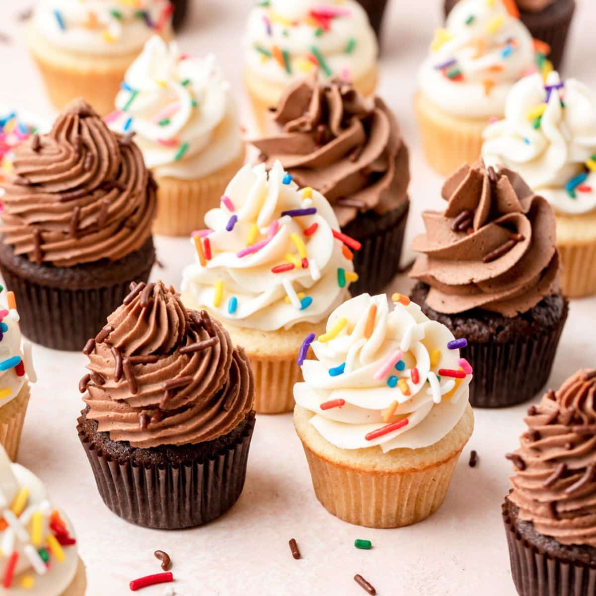

Cupcake
Delicious and versatile dessert that can be enjoyed by people of all ages. They are perfect for parties, special occasions, or just a snack.
Delicious and versatile dessert that can be enjoyed by people of all ages. They are perfect for parties, special occasions, or just a snack.
Ingredients: 1 1/2 cups all-purpose flour 1 1/2 teaspoons baking powder 1/4 teaspoon salt 1/2 cup unsalted butter, softened 1 cup granulated sugar 2 large eggs 2 teaspoons vanilla extract 1/2 cup milk
Ingredients: 2 1/4 cups all-purpose flour 1/2 cup granulated sugar 2 teaspoons baking powder 1/2 teaspoon salt 1/2 teaspoon ground cinnamon (optional) 2 large eggs 1/2 cup milk 1/4 cup unsalted butter, melted 1 teaspoon vanilla extract Vegetable oil, for frying For Glazing: 1 cup powdered sugar 2-3 tablespoons milk 1/2 teaspoon vanilla extract